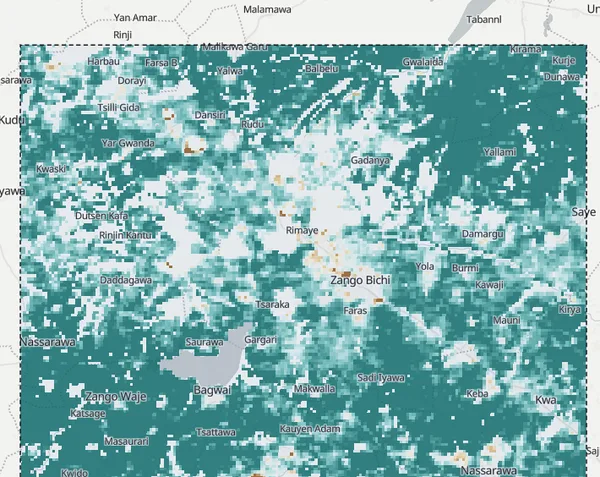

Search any farming area. Get a verdict against twenty years of satellite records in a minute or two.

AgroSignal compares one growing season's mean NDVI with the same months in a range of earlier years, pixel by pixel on the MODIS 250 m grid, and adds the season's rainfall. Everything runs in your browser.
AgroSignal v. Method, tests and validation in the repository. Code MIT; data under their own terms (data register).